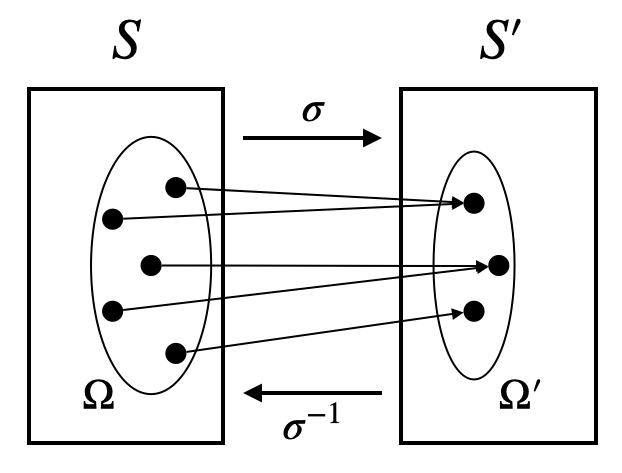
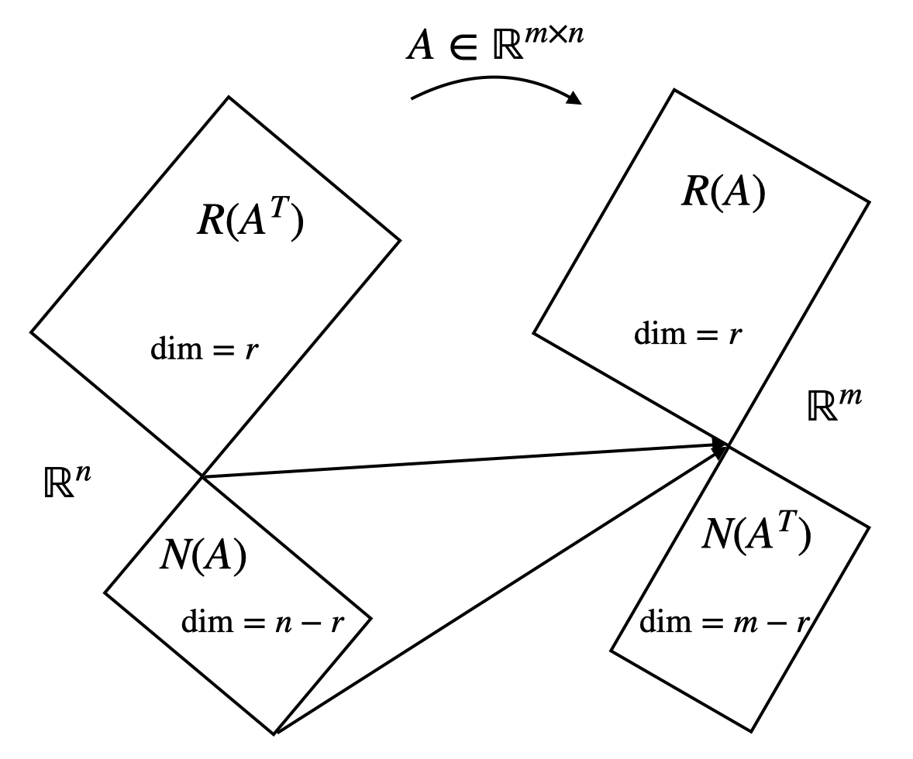

[矩阵论]1.1线性空间
集值映射
由单点映射 \(\sigma:S\to S'\) 导出集值映射 \(\sigma:2^S\to 2^{S'}\)： \[ \begin{align} &\sigma(\Omega)=\{y:y=\sigma(x),\exists x\in\Omega\}\\ &\sigma^{-1}(\Omega')=\{x:y=\sigma(x),\exists y\in\Omega'\} \end{align} \] 
线性空间 \((V,K,+,\cdot)\)
满足 8 条性质（加法和数乘各 4 条）：
- 结合律：\(x+(y+z)=(x+y)+z\)
- 交换律：\(x+y=y+x\)
- 存在零元素：\(x+0=x\)
- 存在负元素：\(x+(-x)=0\)
- 数因子分配律：\(k(x+y)=kx+ky\)
- 分配律：\((k+l)x=kx+lx\)
- 结合律：\(k(lx)=(kl)x\)
- 存在单位元：\(1x=x\)
集合中的元素无需一定是列向量，可以是矩阵、多项式等；加法和数乘也不一定是我们熟悉的加法和数乘，只要满足上述 8 条性质即可。
因此线性空间是多种多样的，这么多的线性空间无法一一研究，我们后面会说明：所有线性空间都与 \(\mathbb R^n\) 或 \(\mathbb C^n\) 代数同构，因此只需研究 \(\mathbb R^n\) 和 \(\mathbb C^n\) 即可。
线性相关、线性无关、极大线性无关组、线性空间的维度
本课程只讨论有限维空间，无穷维空间属于泛函分析的范畴。
基 \((x_1,\ldots,x_n)\)
满足 2 条性质：
- \(x_1,\ldots,x_n\) 线性无关；
- \(V\) 中任意向量都是 \(x_1,\ldots,x_n\) 的线性组合。
组成基的向量排列是有顺序的！因为向量在这个基下的坐标表示是有顺序的，例如 \((1,2)\neq (2,1)\).
坐标表示
设 \(X=(x_1,\ldots,x_n)\) 是一个基，向量 \(x\) 在这个基下的坐标表示为 \(\xi=(\xi_1,\ldots,\xi_n)^{T}\)，则可写作： \[ x=\xi_1 x_1+\cdots+\xi_nx_n=X\xi \]
式 \(x=X\xi\) 非常重要，日后将经常使用。
其中 \(X=(x_1,\ldots,x_n)\) 表示向量组而非矩阵，\(X\xi\) 也并非矩阵乘法，只是可以按照矩阵乘法来理解。
任何 \(n\) 维线性空间 \(V\) 都与 \(\mathbb R^n\) 或 \(\mathbb C^n\) 同构
即存在一个一一映射 \(\sigma:V\to\mathbb R^n(\mathbb C^n)\)，使得： \[ \begin{align} &\sigma(x+y)=\sigma(x)+\sigma(y)&&\quad x,y\in V\\ &\sigma(kx)=k\sigma(x)&&\quad x\in V,\,k\in K \end{align} \]
证明：
充分性：验证 8 条性质即可。
必要性：任给 \(V\) 中的一个基，那么该基下的坐标表示就是一个符合条件的同构映射！
基变换与过渡矩阵
设有两个基：\(X=(x_1,\ldots,x_n)\)，\(Y=(y_1,\ldots,y_n)\)，\(Y\) 中每一个基向量由 \(X\) 的基向量线性表示为： \[ \begin{cases} y_1=c_{11}x_1+\cdots+c_{n1}x_n\\ \quad\vdots\\ y_n=c_{1n}x_1+\cdots+c_{nn}x_n\\ \end{cases}\implies Y=XC \] 称 \(C\) 为过渡矩阵。过渡矩阵一定非奇异。
设有一向量 \(x\)，在两个基下的坐标表示分别为 \(\xi=(\xi_1,\ldots,\xi_n)^T\) 和 \(\eta=(\eta_1,\ldots,\eta_n)^T\)，则： \[ x=X\xi=Y\eta\implies\xi=C\eta\;(\eta=C^{-1}\xi) \] 自然基下，向量 \(x\) 和坐标表示是一致的，常常不加区别地用同一符号表示。
式 \(Y=XC\) 和 \(\xi=C\eta\) 日后也将经常使用。
线性子空间
只需验证 2 条性质：
- 对加法封闭：若 \(x,y\in V_1\)，则 \(x+y\in V_1\)；
- 对数乘封闭：若 \(x\in V_1,\,k\in K\)，则 \(kx\in V_1\).
零子空间：仅由 0 构成的子空间，其维度为 0.
交、和、直和
子空间的交仍然是子空间，子空间的和仍然是子空间。当交为空时称和为直和。
子空间和的维数公式： \[ \dim V_1+\dim V_2=\dim (V_1+V_2)+\dim (V_1\cap V_2) \]
非常重要的证明思路——基扩充：从最小的子空间 \(V_1\cap V_2\) 出发，构造它的一个基 \(X=(x_1,\ldots,x_r)\)，然后分别扩充成 \(V_1\) 的基 \((X,Y)=(x_1,\ldots,x_r,y_1,\ldots,y_s)\) 和 \(V_2\) 的基 \((X,Z)=(x_1,\ldots,x_r,z_1,\ldots,z_t)\)，最后证明 \((X,Y,Z)=(x_1,\ldots,x_r,y_1,\ldots,y_s,z_1,\ldots,z_t)\) 为 \(V_1+V_2\) 的基。
证明：要证明 \((X,Y,Z)=(x_1,\ldots,x_r,y_1,\ldots,y_s,z_1,\ldots,z_t)\) 为 \(V_1+V_2\) 的基，只需证明 1) 线性无关；2) 可表示任一 \(v\in V_1+V_2\).
首先证明线性无关。设： \[\sum_{i=1}^r a_ix_i+\sum_{j=1}^s b_jy_j+\sum_{k=1}^t c_kz_k=0\] 则： \[\sum_{i=1}^r a_ix_i+\sum_{j=1}^s b_jy_j=-\sum_{k=1}^t c_kz_k\in V_1\] 由于 \(z_k\notin V_1\)，故 \(c_k=0\)，进而 \(a_i=b_j=0\). 故线性无关。
其次，任取 \(v\in V_1+V_2\)，则 \(\exists v_1\in V_1,v_2\in V_2\) 使得 \(v_1+v_2=v\). 设： \[v_1=\sum_{i=1}^r a_ix_i+\sum_{j=1}^s c_jy_j,\quad v_2=\sum_{i=1}^r b_ix_i+\sum_{k=1}^t d_kz_k\] 则： \[v=\sum_{i=1}^r(a_i+b_i)x_i+\sum_{j=1}^s c_jy_j+\sum_{k=1}^t d_kz_k\] 综上，\((X,Y,Z)\) 是 \(V_1+V_2\) 的一个基。
向量组扩张为子空间
由单个向量 \(x\) 对数乘运算封闭构成一维子空间：\(L(x)=\{z\vert z=kx,k\in K\}\)；
由向量组 \(x_1,\ldots,x_m\) 扩张成的子空间：\(L(x_1,\ldots,x_m)=L(x_1)+\cdots+L(x_m)\).
显然 \(\dim L(x_1,\ldots,x_m)\leq m\).
值域（列空间）、核空间（零空间）与秩
设 \(A\in\mathbb R^{m\times n}\)：
- \(R(A)=L(a_1,\ldots,a_n)\subset \mathbb R^m\)
- \(N(A)=\{x\vert Ax=0\}\subset\mathbb R^n\)
- \(\text{rank}(A)=\text{构成极大线性无关组的列向量个数}=\dim(R(A))\)
定理： \[ \dim(R(A))+\dim(N(A))=n \]
证明思路依旧是基扩充：设 \((x_1,\ldots,x_s)\) 为 \(N(A)\) 的一个基，将其扩充为 \(\mathbb R^n\) 的基 \((x_1,\ldots,x_s,y_1,\ldots,y_{n-s})\). 只需证明 \((Ay_1,\ldots, Ay_{n-s})\) 是 \(R(A)\) 的基。
首先证明线性无关。假设： \[\sum_{j=1}^{n-s}b_j(Ay_j)=0\] 由于 \(Ax_i=0\ (i=1,\ldots,s)\)，所以： \[\sum_{j=1}^{n-s}b_jAy_j=\sum_{i=1}^sa_i Ax_i+\sum_{j=1}^{n-s}b_jAy_j=A\left(\sum_{i=1}^sa_i x_i+\sum_{j=1}^{n-s}b_jy_j\right)=0\] 也就是说： \[\sum_{i=1}^sa_i x_i+\sum_{j=1}^{n-s}b_jy_j\in N(A)\] 但是 \((x_1,\ldots,x_s)\) 与 \((y_1,\ldots,y_{n-s})\) 是线性无关的，所以只能是 \(b_j=0, (j=1,\ldots,n-s)\). 因此线性无关。
其次，任取 \(z\in R(A)\)，则存在 \(w\in\mathbb R^n\) 使得 \(z=Aw\). 设 \(w\) 在 \((x_1,\ldots,x_s,y_1,\ldots,y_{n-s})\) 这个基下可以线性表示为： \[w=\sum_{i=1}^s c_ix_i+\sum_{j=1}^{n-s}d_j y_j\] 那么 \(z\) 可以由 \((Ay_1,\ldots,Ay_{n-s})\) 线性表示为： \[z=Aw=\sum_{i=1}^s c_i (Ax_i)+\sum_{j=1}^{n-s}d_j(Ay_j)=\sum_{j=1}^{n-s}d_j(Ay_j)\] 证毕。
Gilbert Strang 的著名的四个基本子空间：
